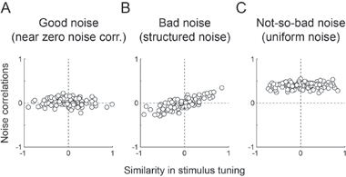

News Archives : 2012 : Good Noise, Bad Noise [Uchida Lab]
by Naoshige Uchida
July 18, 2012
Biological systems are inherently noisy: they contain randomness beyond an observer’s control. The most common approach to deal with noise is simply to throw it away: by averaging it out, one can obtain a more accurate or “representative” value. Indeed, averaging N measurements improves the signal-to-noise ratio by a factor of the square root of N (for more information, read “Random Walks in Biology” by Howard Berg). Rather than throwing it away, however, can we learn something by looking at noise?
Neurons are often considered stochastic. An identical image, for example, can cause different numbers of spikes in a visual neuron from one presentation to the next. To deal with such stochasticity, the brain could “average” over many neurons. However, such averaging may not always work perfectly. Previous studies in the visual system have shown that firing rates of neurons often go up and down together: when one neuron fires more spikes than its mean, other neurons tend to do the same. Such co-fluctuations have been seen more often between pairs of neurons tuned to similar stimuli; therefore, such co-fluctuations might arise because these neurons receive common inputs. This is bad news for improving the signal-to-noise ratio by a population of neurons: if noise is not random, it cannot be averaged out.

So what is the nature of noise, and how would different types of noise affect signaling? When neurons are completely independent (or when neurons do not co-fluctuate; Figure A), simple averaging robustly improves the signal-to-noise ratio. In contrast, when neurons that respond to similar stimuli co-fluctuate (Figure B), it is difficult to know whether changes in activity are due to the stimulus or to common noise. However, co-fluctuations are not always detrimental: if all neurons move together (not just the ones with similar selectivity), the brain can glean important information just by looking at the overall activity of the population of neurons (Figure C). In other words, the efficiency of “averaging” critically depends on the “structure of noise”.
Although computational neuroscientists have put forward these ideas for over a decade (Sompolinsky et al., 2001), how these theories apply to real biology remained to be tested. In a recent study published paper in Neuron, we examined how a population of neurons in the olfactory cortex signals odor information. Using multi-electrode recordings, we measured the activity of a population of neurons simultaneously while rats performed an odor discrimination task (Uchida and Mainen, 2003). Sniffing an odor activated a large number of distributed neurons in the olfactory cortex. When we analyzed pairs of neurons recorded simultaneously, we found that neurons in the olfactory cortex did not show co-fluctuations when they respond to an odor. This result indicates that neurons in the olfactory cortex signal odor information independently, which is ideal for improving signal-to-noise by a large number of neurons.
The above finding indicates that, in a simple scenario, the animal can reduce the “noise” of stimulus information by simply recruiting more neurons. Indeed, we programed a computer to perform near perfectly on our task by decoding the activity of <100 neurons. Yet rats still made errors in discriminating similar odors. If not the number of neurons, what then limits the behavioral performance of our rats? This is a topic for future investigation.
- Watch the Video of Dr. Uchida describing the study.
- Read more in Neuron.